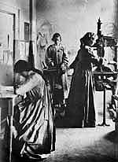

Elizabeth Corbet Yeats
Irish, 1868-1940
The first press founded by Elizabeth Yeats was named for the Lady
Emer, renowned in the Irish epics for her beauty and artistic skills.
The intent was to provide training for young women in a number
of occupations by which they might earn their living, including bookbinding,
weaving,
embroidery, and printing. She was aided in this enterprise by a
woman named Evelyn Gleeson -- who offered her large house in Dundrum,
near
Dublin, in which the group could live and work -- and by her
sister Lily, a skilled needleworker. The press later moved to Dublin
and was
re-named Cuala.
Yeats had been a member of William Morris's circle in London,
and was inspired by his social and political ideas, and more generally
by both the Arts and Crafts revival and the Celtic Renaissance
of the late nineteenth century. Such ideals meant she was perpetually
short
of funds, but she did manage to publish fine editions of many Irish
writers of the period -- including the works of her brother William
Butler Yeats -- over the more than thirty years the Dun Emer and
Cuala presses
were in operation. Her work is simple, almost austere, but beautifully
made.

The Dun Emer press-room, ca. 1903. Elizabeth Corbet Yeats is at the
iron hand-press; Beatrice Cassidy, standing, is rolling out ink,
and Esther Ryan is correcting proofs at the table. The rear wall
of the press-room displays a mural in pastel by the poet and artist
AE (George Russell).
![Twenty One Poems by Katharine Tynan, Dun Emer Press [Elizabeth Corbet Yeats]](../collection/thumbnails/F3DSC_0020.jpg)
Twenty One Poems by Katharine Tynan: selected by W. B. Yeats,
Dundrum: Dun Emer Press, 1907.
The title page device, from a wood engraving by Elinor Monsell,
shows the Lady Emer standing by a tree. Monsell also created the
device of the Abbey Theatre, showing Queen Maeve hunting with a wolfhound
From the colophon: "printed upon paper made in Ireland by Elizabeth
C. Yeats, Esther Ryan and Beatrice Cassidy, and published by Elizabeth
Corbet Yeats"
Rare Books Division

Joy Be With Us, by James Stephens.
Dublin: Cuala Press, ca. 1930.
Broadside, hand-colored initial by Elizabeth Corbet Yeats, signed with her initials,
lower
left.
Rare Books Division. Gift of Leonard L. Milberg, Class of 1953,
for the Irish Poetry Collection